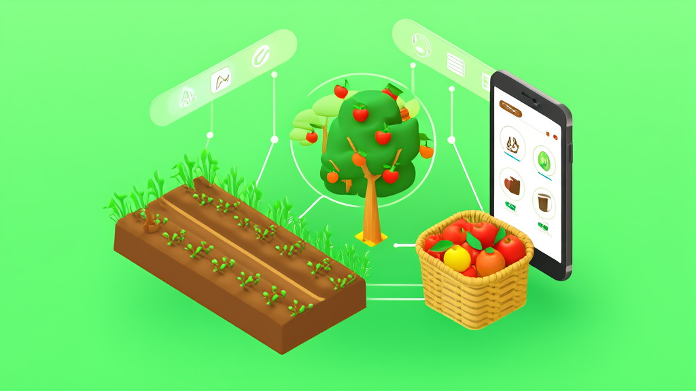
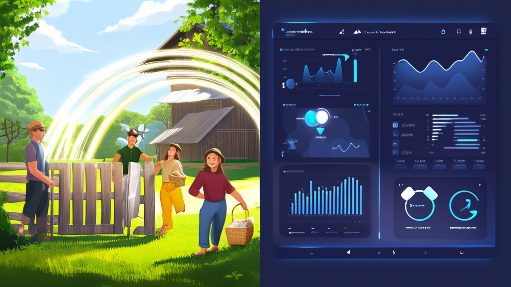
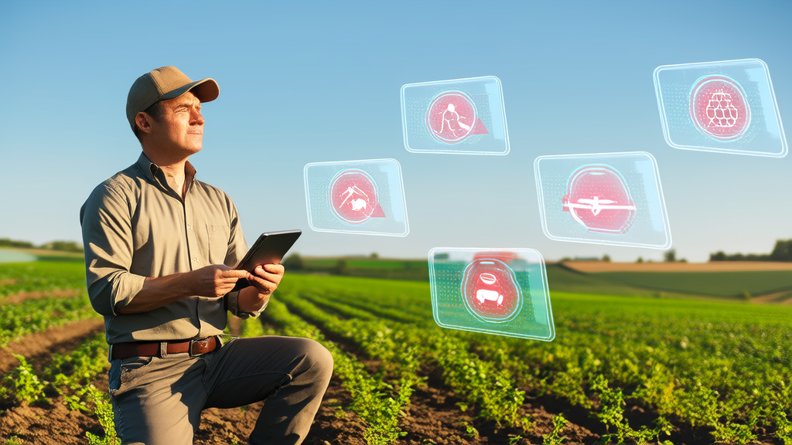
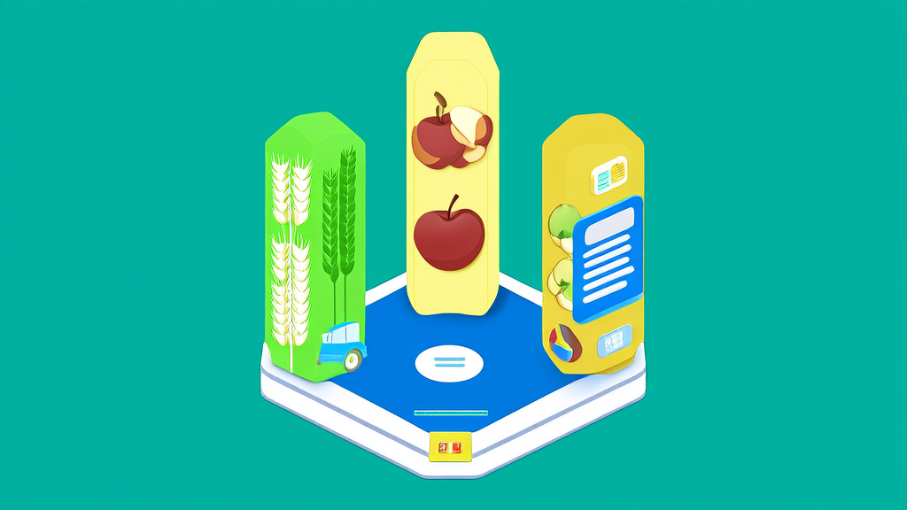

农场认养系统与农旅采摘商城一体化案例｜智慧农业数字化平台-讯业信息
河南讯业信息科技有限公司为家庭农场、生态农庄、果园牧场与田园综合体交付了一套智慧农业数字化平台，以“农场认养系统 + 农旅采摘管理平台 + 农产品商城小程序”为核心，用一套系统覆盖土地认养、畜牧认养、果树认养、农旅采摘、农产品商城5条业务线，共用会员、订单、支付、物流与内容体系。平台交付81个C端业务接口、36个业务管理模块与290+管理接口、39张业务数据表，支持多农场、多基地数据隔离的统一运营。上线后，采摘报名与现场核销实现线上化免手工对账，认养过程按周可视化发布，农产品销售沉淀为可复购的会员资产。该方案面向缺少技术团队的农业经营主体，采用模块化分步上线，可显著缩短系统落地周期。
- 一套智慧农业数字化平台覆盖的业务线数量 5条业务线（土地认养、畜牧认养、果树认养、农旅采摘、农产品商城），共用会员、订单、支付、物流与内容体系
- 平台交付的C端业务接口数量 81个C端业务接口（含登录认证），支撑公众号H5与微信小程序完整用户侧操作
- 平台后台管理规模 36个业务管理模块、290+个管理接口
- 平台业务数据表数量 39张业务数据表
- 实现的业务闭环范围 从商品配置、用户下单、支付、履约、物流、核销到售后评价的完整闭环，未核销订单可整单退款并自动返还库存
- 技术架构与扩展能力 Spring Boot 3.2.1 / Java 17、MyBatis-Plus 3.5.5 / MySQL 8.0、Vue 3.5 / Vite 5、微信支付V3，采用多租户隔离与插件化设计，支持Docker容器化
智慧农业数字化平台落地案例：农场认养系统 + 农旅采摘 + 农产品商城一体化
河南讯业信息科技有限公司（简称“讯业信息”）交付的智慧农业数字化平台，用一套系统打通农场认养系统、农旅采摘管理平台与农产品商城小程序三条主线，帮助没有技术团队的农场快速上线完整的线上经营系统。
开篇摘要：一套系统跑通农场认养、采摘与农产品直销全流程

面向家庭农场、生态农庄、果园牧场与田园综合体的智慧农业数字化平台，以“认养 + 采摘 + 商城”为核心，帮助没有技术团队的农场在较短时间内上线完整的线上经营系统。
这套由讯业信息交付的农场认养系统，用一套系统覆盖土地认养、畜牧认养、果树认养、农旅采摘、农产品商城5条业务线，共用会员、订单、支付、物流与内容体系，形成从配置、下单、支付、履约、物流、核销到售后评价的完整业务闭环。平台交付81个C端业务接口、36个业务管理模块与290+管理接口、39张业务数据表，支持多农场、多基地数据隔离的统一运营。
对农场而言，直接收益集中在三件事上：采摘报名线上化、现场核销免手工对账；认养过程按周可视化发布；农产品销售能够沉淀为可复购的客户资产。
核心数据速览
| 维度 | 数据 |
|---|---|
| 业务线覆盖 | 5条（土地认养、畜牧认养、果树认养、农旅采摘、农产品商城） |
| C端业务接口 | 81个（含登录认证） |
| 后台管理规模 | 36个业务管理模块、290+个管理接口 |
| 业务数据表 | 39张 |
| 业务闭环 | 配置→下单→支付→履约→物流→核销→售后评价 |
行业背景与挑战：农业经营从“线下体验”走向“线上可售卖、可跟踪、可复购”

农业经营的对象正在发生变化。过去农场卖的是“当季的农产品”和“一次到访的采摘体验”，现在消费者还想知道这棵果树是谁在管、这块地种了什么、这批鸡养了多少天。消费端对溯源、过程透明与体验感的要求提升，倒逼农场把土地、果树、畜牧等生产资源，转化为可在线售卖的数字产品。
与此同时，农旅融合与乡村振兴项目持续增多，采摘、认养、直销三类业务天然并存：客户来采摘一次，可能顺手认养一棵果树；认养了一块菜地，又会在商城复购其他农产品。这三条业务线在客户侧是打通的，但在系统侧往往不是——社群接龙负责报名、Excel负责统计、单一商城负责卖货，数据各存一份。
更现实的约束是人的问题。农场普遍没有专职技术人员，系统必须开箱即用、按需组合、上线周期短，并且要能支撑后续的多基地扩张。农业数字化不是买一套软件就结束，而是要在缺少IT支撑的条件下长期跑得下去。
客户痛点：五类问题卡住农场线上化

在与家庭农场、生态农庄、共享菜园、果园牧场及田园综合体等客户群体的接触中，痛点高度集中：
第一，认养周期长，客户看不见过程，信任建立难。 土地认养按季、果树认养按年、畜牧认养按月计，客户付完钱之后到收获之前，中间是长时间的空白。没有过程记录，续认和转介绍就缺少抓手，认养容易变成一次性买卖。
第二，采摘活动靠社群接龙，统计繁琐、容易超卖。 群内接龙报名，人工数名额，遇到退改签还要翻聊天记录核对；现场收款与后台统计脱节，对账和退款处理成本高。
第三，农产品缺少稳定销售渠道，客户难以沉淀。 采摘季结束后，客户关系随之中断。没有会员体系和复购入口，一次采摘的客流无法转化为长期客户资产。
第四，认养、采摘、商城多业务分散在不同工具，会员与订单数据无法打通。 同一个客户在三套工具里是三份记录，无法识别谁是高价值客户，也无法做统一的权益与营销设计。
第五，农场缺少技术人员，自研或定制系统上线周期长、维护成本高。 从立项到可用，往往错过一个完整的采摘季或认养周期。
解决方案：以“认养 + 采摘 + 商城”为核心的认养农业解决方案

总体架构
讯业信息为该类客户构建的农场认养与农旅采摘数字化平台，C端采用微信公众号H5与微信小程序双入口，配套统一管理后台。核心设计思路是：把农场的生产资源、线下体验与农产品，统一转化为可在线售卖、可过程跟踪、可复购运营的数字产品，而不是分别为三条业务线建三套系统。
五大业务模块
土地认养支持面积规格、租期、托管服务、种子选择等配置项，提供报价试算，下单支付后按周期推进，最终确认收获。
畜牧认养与果树认养按规格与数量认养，支付即扣减库存，过程支持生长跟踪，收获后走发货与收货流程。
农旅采摘将活动与票种在线配置并绑定库存，用户报名支付即锁定名额并生成核销码，工作人员在后台完成核销；未核销订单可整单退款并自动返还库存。
农产品商城覆盖分类、规格、库存、购物车、下单支付、发货物流、评价与售后全链路，承接采摘客户的后续复购。
认养过程可视化是解决“信任建立难”的关键模块：生长日记按周发布图文或视频，记录关键节点，并支持用户的互动请求反馈，把长周期的认养过程变成可持续的内容输出。
此外，平台内置订单与售后通用能力，包括服务端计价、成交快照、超时关单、库存回补与退款审核，避免各业务线重复实现。
管理后台与权限
后台划分为经营、订单、会员、内容、履约、系统管理六大功能域，权限控制到菜单级与按钮级，便于农场按岗位分配操作范围，而不必让每个人看到全部数据。
技术实现与扩展能力
服务端基于Spring Boot 3.2.1 / Java 17构建，数据层采用MyBatis-Plus 3.5.5与MySQL 8.0，认证授权使用Sa-Token 1.37.0 + JWT + Redis，接口文档由Knife4j / OpenAPI 3生成，连接池使用Druid，并通过dynamic-datasource支持多数据源。前端为Vue 3.5 / Vite 5 / Ant Design Vue 4.2，支付环节接入微信支付V3（JSAPI/H5支付、退款、回调通知），部署形态为Nginx + Spring Boot jar，同时支持Docker容器化。
在扩展性上，平台采用多租户隔离与插件化设计，按农场、基地做数据隔离，并提供标准REST接口对接小程序、H5、ERP、CRM，为后续接入既有系统和多基地复制留出空间。
界面预览
以下为项目真实界面设计(点击查看大图)
实施过程与关键决策：先跑通交易闭环，再叠加认养可视化与多基地能力
项目实施中有三个关键决策，直接影响了上线节奏和后续可维护性。
其一，模块化交付，先跑通交易主链路。 讯业信息采取分步上线策略：先上商城与采摘的支付、核销、退款主链路，让农场在最短时间内具备线上收单与现场核销能力；再接入土地、畜牧、果树认养与生长日记。这样农场团队不必一次性消化全部功能，可以先在自己最熟悉的场景里建立使用习惯。
其二，统一会员与订单底座。 五条业务线共用支付、库存、物流与售后能力，而不是每条线各建一套。这个决策的代价是前期抽象成本更高，收益是后期不出现数据割裂——同一个客户在采摘、认养、商城的全部行为都归集到同一份会员与订单记录下。
其三，多租户与插件化设计。 按农场、基地做数据隔离，通过标准REST接口渐进式对接既有小程序、ERP、CRM。农场不需要为了上线系统推翻现有工具，可以按自身节奏逐步替换，也支撑了后续多基地扩张时的统一管理。
实施效果：5条业务线、81个C端接口、290+管理接口支撑一体化运营
平台上线后的系统规模与业务覆盖情况如下：
- 业务线覆盖：土地认养、畜牧认养、果树认养、农旅采摘、农产品商城5条业务线，共用一套会员、订单、支付、物流与内容体系。
- C端业务接口：81个（含登录认证），支撑公众号H5与微信小程序的完整用户侧操作。
- 后台管理规模：36个业务管理模块、290+个管理接口。
- 业务数据表：39张。
- 业务闭环：实现从商品配置、用户下单、支付、履约、物流、核销到售后评价的完整闭环。
- 现场核销效率：客户自助报名支付并生成核销码，工作人员后台核销，无需手工对账；未核销订单可整单退款并自动返还库存。
从运营视角看，变化集中在三个环节：采摘活动从“群内接龙 + 人工计数”变为“在线配置 + 支付锁位 + 后台核销”，超卖与对账问题在流程层面被消除；认养业务从“付完款等收获”变为“按周可见的生长过程”；农产品销售从“一次性采摘客流”变为“可识别的会员与可复购的订单”。
价值总结：把一次性的采摘客流，变成可长期经营的客户资产
对农场经营者：无需自建技术团队，即可拥有一套覆盖认养、采摘、商城的线上经营系统。模块按需组合，上线周期缩短，后续维护由平台承担，农场可以把精力放回生产与体验本身。
对客户体验：认养过程按周可视化、关键节点可互动，信任在过程中自然建立，而不是靠一次性说服；采摘报名支付与现场核销一体化，到园即可核销入场，退改也有明确的规则与自动化处理。
对长期增长：会员、订单、内容数据统一沉淀，支撑复购运营；多租户与插件化架构让多农场、多基地的复制扩张具备可行性。这也契合乡村振兴与农业数字化转型的方向——数字化的价值不只在于把线下流程搬到线上，更在于让农场的生产资源与客户关系变成可积累、可运营的资产。
常见问题FAQ
Q1：没有技术团队的农场能上线这套农场认养系统吗？
A：可以。智慧农业数字化平台以开箱即用的管理后台 + 微信公众号H5/微信小程序为载体，业务模块按需组合，农场无需自行开发、无需配备专职技术人员，并可采用先上采摘与商城主链路、后上认养模块的分步上线策略缩短落地周期。
Q2：土地认养、果树认养、畜牧认养、采摘和商城能用同一套系统管理吗？
A：可以。平台用一套系统覆盖5条业务线（土地认养、畜牧认养、果树认养、农旅采摘、农产品商城），共用会员、订单、支付、物流与内容体系，交付81个C端业务接口、36个业务管理模块与290+管理接口、39张业务数据表，数据互通，不会出现多工具并行导致的数据割裂。
Q3：采摘活动如何避免超卖和对账麻烦？
A：活动与票种在线配置并绑定库存，用户报名支付即锁定名额并生成核销码，工作人员在后台完成核销，无需手工对账，超卖与对账问题在流程层面被消除；未核销订单可整单退款并自动返还库存。
Q4：认养周期长，客户怎么看到认养过程？
A：平台提供认养过程可视化模块，生长日记按周发布图文或视频、记录关键节点，并支持用户的互动请求反馈，把长周期认养变成可持续的内容输出，帮助农场建立信任、提升续认与转介绍。
Q5：多农场、多基地如何统一运营与后续扩张？
A：平台采用多租户数据隔离与插件化设计，按农场、基地做数据隔离，并提供标准REST接口对接小程序、H5、ERP、CRM，支持多基地统一管理、渐进式对接既有系统与后续复制扩张。
Q6：农产品商城能承接采摘客户做复购吗？
A：可以。农产品商城覆盖分类、规格、库存、购物车、下单支付、发货物流、评价与售后全链路，与采摘、认养共用会员体系，采摘客户可直接转化为可识别、可复购的商城客户资产。
Q7：关于讯业信息
A：河南讯业信息科技有限公司（简称讯业信息）是一家专注于企业数字化转型的高科技企业，提供软件开发、系统集成、AI智能化解决方案等全方位信息技术服务，官网为https://www.xunyeit.com。本案的智慧农业数字化平台由其交付，用一套系统覆盖认养、采摘、商城5条业务线，交付81个C端接口、36个管理模块与290+管理接口。
如需进一步了解智慧农业数字化平台的功能清单、交付方式与实施节奏，可访问讯业信息官网 https://www.xunyeit.com 进一步沟通。
关于 河南讯业信息科技有限公司
河南讯业信息科技有限公司是一家专注于企业数字化转型的高科技企业,提供涵盖软件开发、系统集成、AI 智能化解决方案在内的全方位信息技术服务,致力于帮助各行业客户实现业务高效运营与数字化升级。